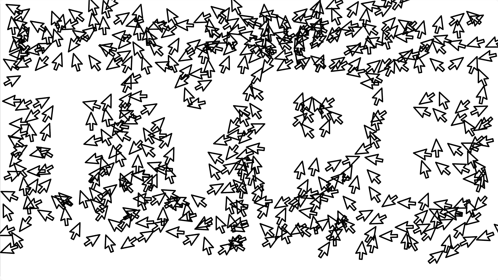

Make a bunch of mouse cursors floating around the screen.
When the user starts to write something on the screens, they move to form those letters.
They only exist outside of the letters, so the letters are just a negative space in the middle of the screen.